If you spend any time in Palm Springs during the winter, you will notice a familiar refrain: Chicago shows up. Neighbors, friends-of-friends, and longtime locals swap restaurant recommendations at the coffee counter, compare hikes, and tell you where to find the best vintage treasures.
This Palm Springs edition is a running list of little discoveries that make Palm Springs special: hidden galleries, views that stop you mid-sentence, or a place you’ll happily return to again and again. Here are a few more of my favorite things starting with the simple joy of wandering and letting Palm Springs surprise you.
A few of my favorite things in Palm Springs
The Vintage Market
The first Sunday of each month, the Vintage Market is a retro and mid-century modern lover’s dream. palmspringsvintagemarket.com


Antiques on Sunny Dunes
There are several great antique stores on Sunny Dunes, each one is a treasure hunt every time. The Sunny Dune Antique Mall is one of my favorites. visitpalmsprings.com/listing/sunny-dunes-antique-mall


Back Street Art Walk
The first Wednesday of each month, there is a gallery walk. This year I ran into local artist and friend, Ernesto Ramirez. And made a new friend Gary Wexler, whose graphic designs caught my eye and was delighted to discover that he is the son of the famous Palm Springs architect, Donald Wexler. backstreetartdistrict.com


Indian Canyons
Not too far from downtown Palm Springs are the Indian Canyons. The canyons are sacred to the Indians and are especially beautiful early in the day, when the palm trees cast long shadows. indian-canyons.com


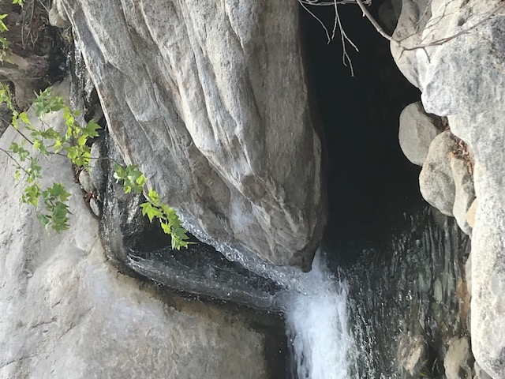
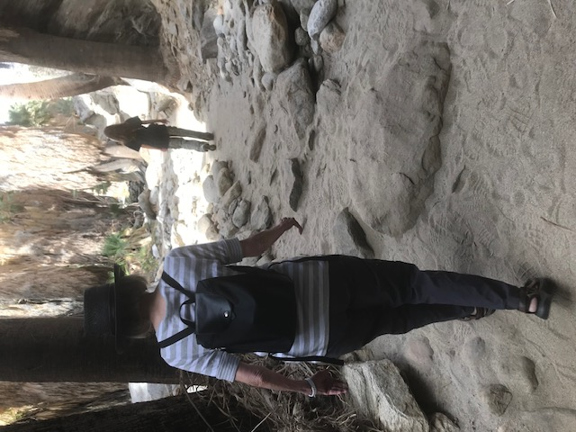
The College of the Desert Street Fair
On the outskirts of Palm Springs on the campus of the College of the Desert you’ll find The Street Fair. It’s open every weekend all year round. You’ll find everything from sun hats, to handbags, to kitchen gadgets, and more. codaastreetfair.com
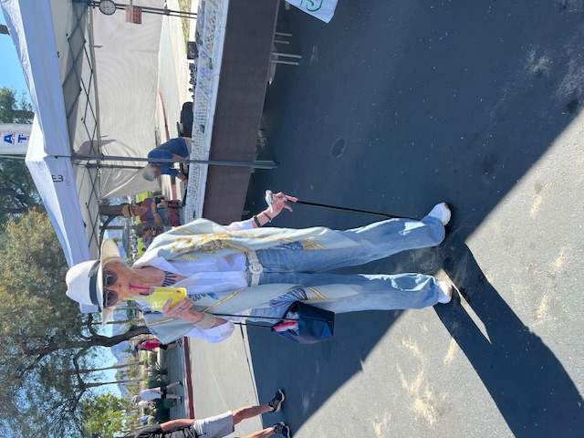
Chicago Friends in the Desert
One of the best parts of being here is how willing people are to share their stories, how they found Palm Springs, what keeps them coming back, and the places they love most.
This month I’m adding a new twist: I’m featuring a few dear friends who spend their winters in Palm Springs. I asked each of them the same question, what’s your favorite thing about Palm Springs?
First up: Pat and Larry Booth. Chicago roots, Palm Springs sunshine, and a shared love of art and architecture that fits this town perfectly.
Pat and Larry Booth
Larry Booth is a renown Chicago architect and the principal and founder of Booth Hansen. His wife, Pat, is a Southern California native. Friends lured them back to the desert, and it didn’t take long for them to immerse themselves in Palm Springs’ irresistible mix of art, design, and mid-century modern architecture. Over the years, Larry has designed several beautiful homes in Palm Springs—projects that feel perfectly at home against the mountains and the open desert sky.
Pat and Larry first started coming to Palm Springs several years ago. What began as a visit quickly turned into a deep affection for the place and, eventually, a second home of their own.
Larry shared stories about some of his most memorable projects, like a spectacular home he designed for a Chicago couple who originally had purchased the Frederick Loewe house (yes, that Frederick Loewe—the composer best known for My Fair Lady). The home even came with Loewe’s piano, which only added to the sense of history and inspiration.
Inspired, the couple also purchased the lot next door and asked Larry to design a modern home built over the boulders, set high above the valley with sweeping views across Palm Springs.
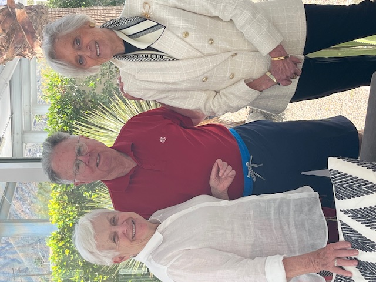
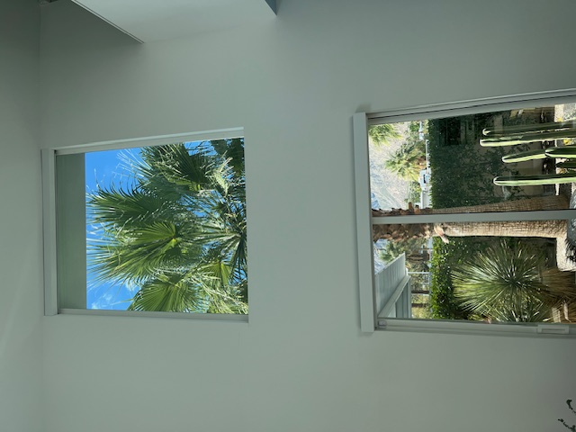
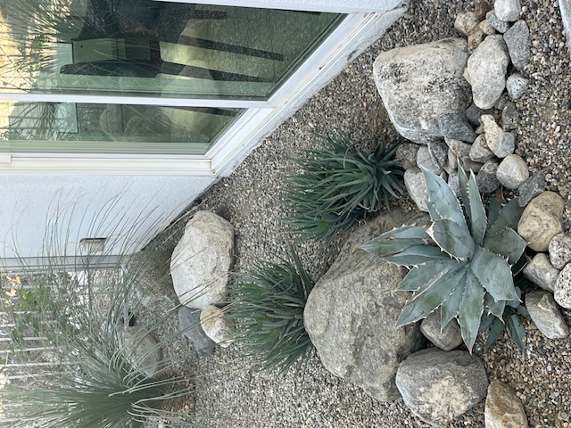
I sat down with Pat in their newly built Palm Springs residence to ask the question I’ve been asking friends all month: What is your favorite thing?
As Pat showed me around, she didn’t hesitate when she answered: it’s the desert landscape, especially when the mountains are dusted with snow. And she enthusiastically added “and the wind turbines!”
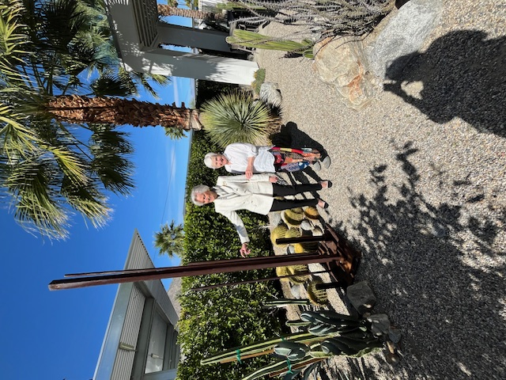
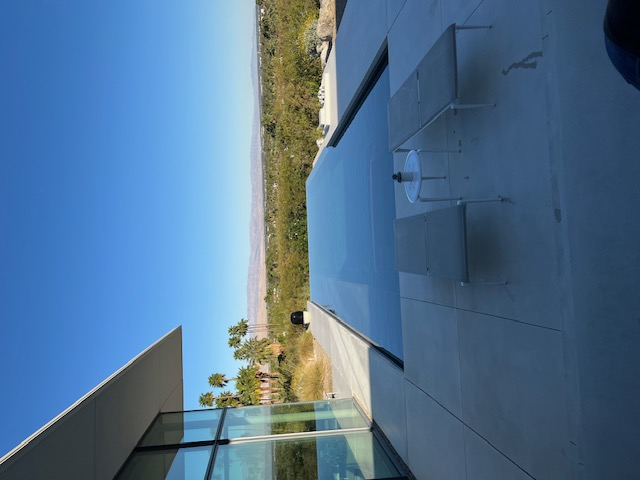
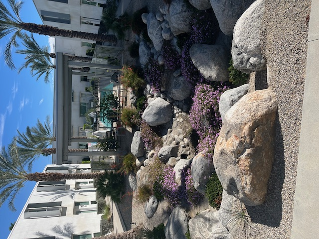
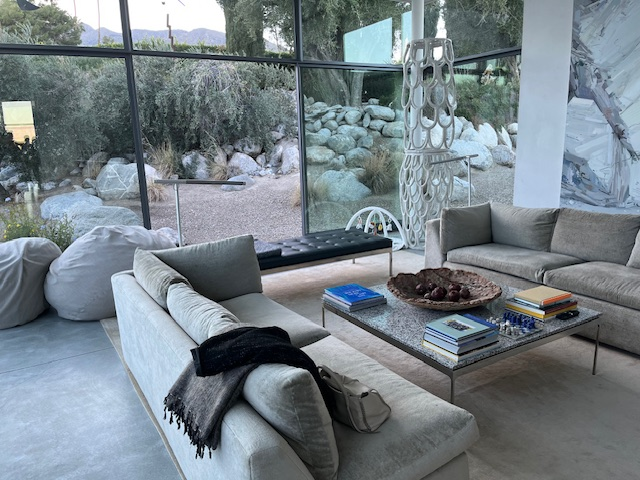
A short while later, Larry emerged from his office with a smile and joined our conversation. When I asked him what he loves most about Palm Springs, he started with golf, specifically the O’Donnell Golf Club, one of the oldest courses in town (dating back to 1929) and a place that still feels like classic Palm Springs.
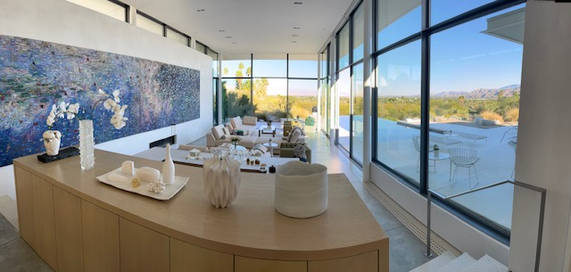
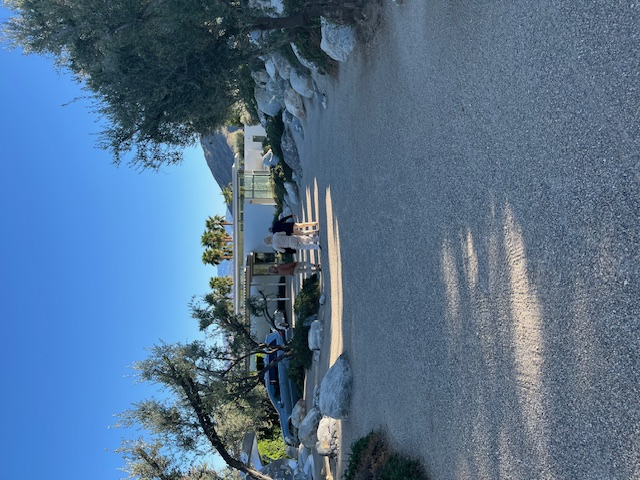
He also mentioned his admiration for architect E. Stewart Williams, whose work helped define the city’s modernist look. Notably the Palm Springs Art Museum and the museum’s Architecture and Design Center.
And then, as if to prove Palm Springs isn’t all architecture and tee times, he quickly added another favorite: “Smashburger and a martini for $18 at Heyday!” theheyday.square.site
There were simply too many Chicago people in Palm Springs (and too many great answers) to fit into just one article. In the next issue, I’ll share more Chicago friends who winter in Palm Springs. And I’ll ask each of them the same simple question: what is your favorite thing?